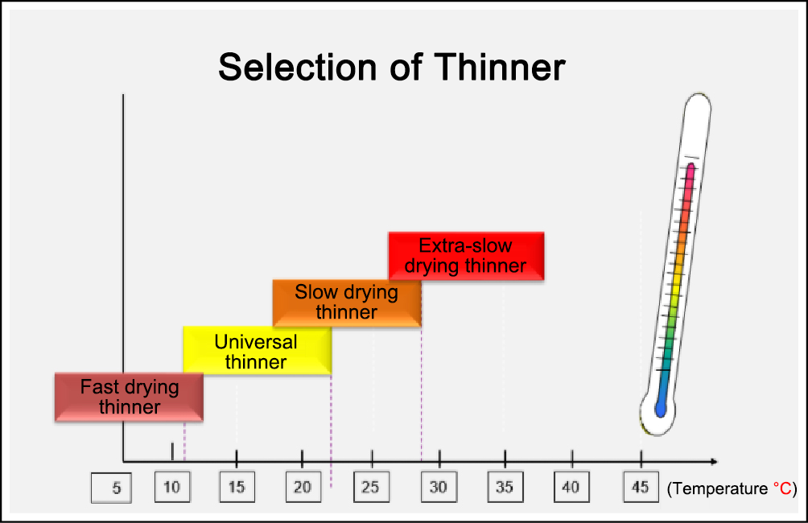

Use of Diluent
-
Knowledge points.
-
Adjust the viscosity of paint, so that the paint can be used for spraying.
-
Select according to the type of paint, size of plate, and application ambient temperature.
-
During paint works, the film forming matter will precipitate from the solution during solvent volatilization. In this process, the solvent is used to control the fluidity during film formation.
-
If the solvent volatilizes too fast, the viscosity of the wet film of paint will increase rapidly, thus the leveling time is insufficient, leading to poor leveling and irregular coating surface, and resulting in flow marks, wrinkles and other defects. If the substrate is insignificantly wet by the film, adhesion problems may occur.
-
If the solvent volatilizes too slow, the reaction speed between resin and curing agent of the coating will be affected, resulting in insufficient hardness of the coating and other defects. Sagging may easily produced on the film of vertical surface.
Reminder
-
The water-based paint is a product with deionized water as the main solvent and low content of volatile organic compounds (VOC).
 -